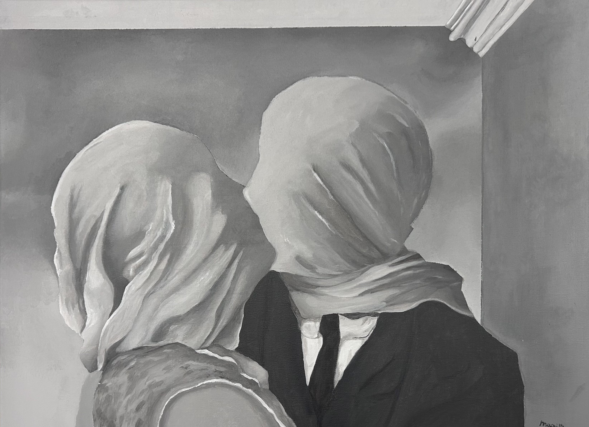
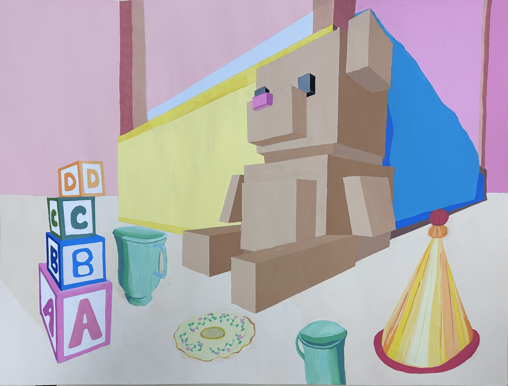

About me
My name is Jazmin Sanchez Garcia and I'm curretly a student at Texas Tech University. I'm currently working on getting my Bacholer's of Science in Computer Applications with a minor in Arts in Writing, Design & technical Communication. This journey has been full of excitemnt specially when it comes to creating amazing projects.
Skills
- Adobe Photoshop Certified
- Adobe Animation Certified
- Adobe Illutrator Certified
My Academic Projects

College Art project | The Lovers by Rene Magritte | Recreation
This Project was intented to show our grayscale skills all while recreating a famous paintings. The painting I choose was The Lovers by Rene margritte because of it's amazing artistic position and look. This painting was recreeated with acrylic paint with a much smaller canvas. The original painting is made out of oil paint with a canvas dimension of 21 3/8X 28 7/8 inches.

College Art Project | Vanishing point